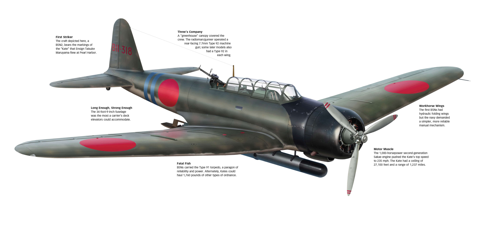
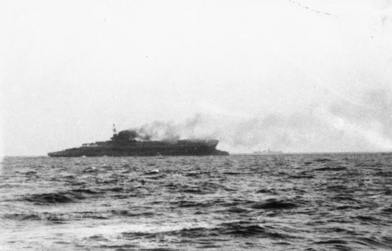
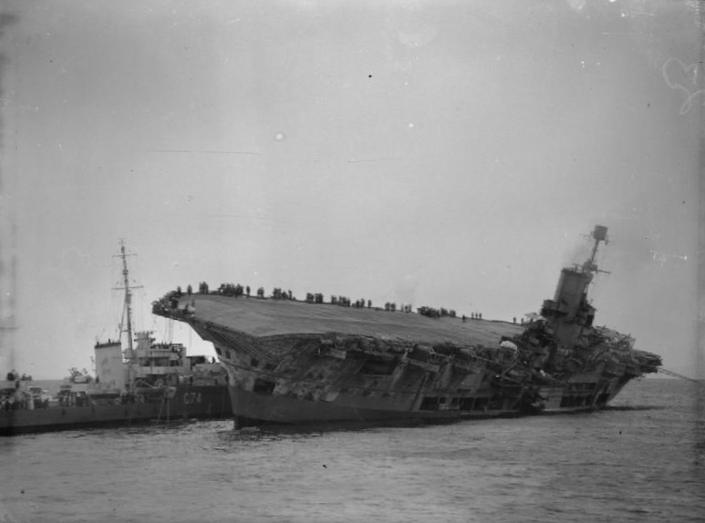
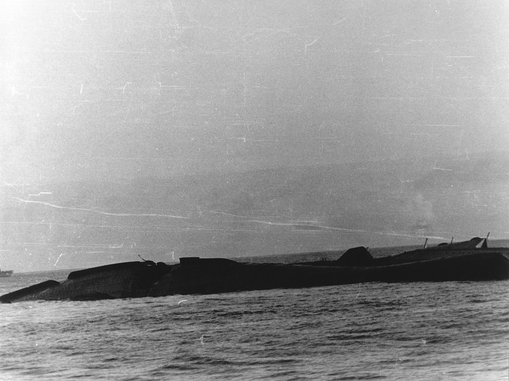
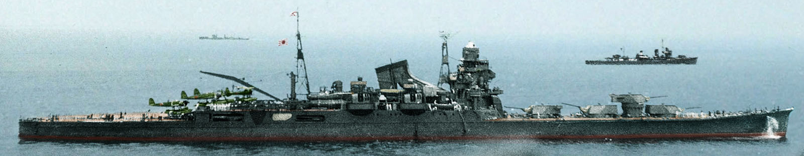
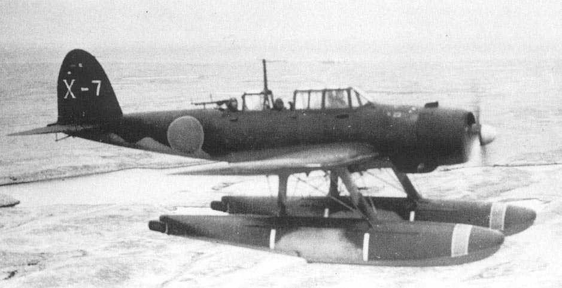
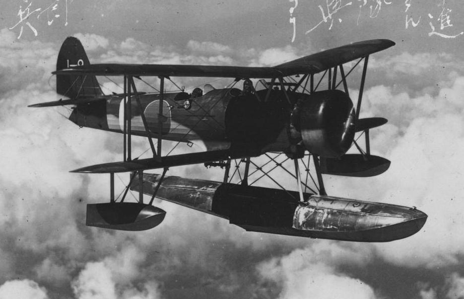
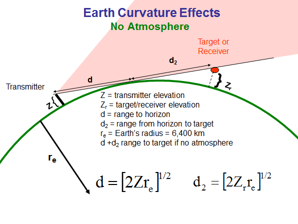

미드웨이에서의 레이더 이야기 (6) - 요크타운의 침몰
게시: 2024-01-25T06:30:30+09:00
<Return buster!> 쳐들어오는 일본 편대 요격을 위해 고공으로 먼저 출발했던 와일드캣 4대의 궤적을 레이더 스크린에서 초조히 주시하고 있던 페더슨 소령은 일본 편대와 와일드캣 편대가 서로 교차하며 지나가는데도 와일드캣 편대장으로부터 tallyho (적기 발견시의 구호) 무전이 들어오지 않자 패배를 직감. 페더슨은 무선 침묵을 깨고 서둘러 와일드캣들에게 '전속 회항! (Return buster!) 너희들이 적기를 지나쳤다'라고 지시. 바로 직후 tallyho를 외친 것은 뒤를 이어 저공으로 보냈던 2대의 와일드캣. 역시나 두 번째로 쳐들어온 일본 편대는 역시나 뇌격기인 Nakajima B5N 'Kate'들. 히류에 탑승하고 있던 야마구찌 소장이 일본 기동부대를 폭격하고 되돌아가는 요크타운 돈틀리스들의 뒤를 밟기 위해 빠른 이함이 가능했던 Val 급강하 폭격기들을 먼저 보낸 것이고, 그 1차 공격으로부터 요크타운의 정확한 위치를 파악하자 2차로 Kate 뇌격기들을 보낸 것. 쳐들어온 편대는 케이트 10대에 호위 전투기 제로센 6대.

(일본해군의 주력 뇌격기 'Kate'. 미드웨이에서의 일본해군 참패의 주원인이 이 뇌격기에 어뢰를 달았다 지상 공격용 폭탄을 달았다 우왕좌왕한 것이라고들 알려져 있지만 실은 그건 억울한 누명일 뿐, 가장 큰 이유는 일본해군에게는 레이더가 없었기 때문. 미해군 뇌격기들처럼 일본해군 뇌격기들도 저공에서 느린 속도로 어뢰를 투하해야 했으므로 대공포에 의한 피해가 컸는데, 그 피해를 조금이라도 줄여보려고 일본해군은 먼저 급강하 폭격기로 공격하여 적군함의 대공포를 제압한 후 뇌격기가 공격하는 것으로 작전을 짜기도 했음. 그러나 당연히 실전 상황에서는 그런 미세한 시간차 공격까지 마음대로 될 리가 없었으므로 그런 작전은 제대로 수행되지 않았으며, 케이트는 언제나 피해가 심했음.)
페더슨이 혹시나 싶어 저공으로 보낸 2대의 와일드캣이 이들을 포착하기는 했으나, 제로센이 무려 6대나 딸린 뇌격기들을 상대로 와일드캣 2대가 할 수 있는 것에는 한계가 있었음. 고공으로 올라갔던 4대의 와일드캣까지 내려와 합세한 뒤에 3대의 뇌격기를 격추했고, 추가로 요크타운 및 호위함들의 대공포화가 2대를 추가로 격추했으나, 결국 5대의 케이트가 미해군의 방어를 뚫고 들어와 요크타운을 겨누고 어뢰를 투하. 요크타운이 몸부림을 치며 급선회 하여 최소한 2발은 피했으나, 다른 2발이 1분 간격으로 요크타운의 좌현에 명중. <몇 도까지 기다렸다 퇴함하셨어요?> 이 피격으로 요크타운의 기관실까지 물이 차기 시작했고, 모든 보일러가 꺼지면서 요크타운이 정지했을 뿐만 아니라 전기가 끊어지는 바람에 배수 펌프도 쓸 수 없었음. 결국 어뢰로 뚫린 구멍으로 콸콸 쏟아져 들어오는 바닷물을 막을 방법이 없어서 요크타운은 점점 좌현으로 기울기 시작. 기관장(Chief Engineer)과 피해복구 담당관(damage control officer)은 이를 막을 방법이 없다고 보고. 항모든 전함이든 침수로 인해 한쪽으로 기우는 것은 매우 위험한 일. 처음에는 조금씩 기울지만 기우는 움직임은 점점 가속이 붙어 어느 순간에는 순식간에 함정이 전복되기 때문. 1939년 독일 U-boat에게 어뢰 2발을 좌현에 얻어맞은 영국 항모 HMS Courageous (2만2천톤, 32노트)도 배를 구하려다 어어하는 사이에 순식간에 배가 전복되는 바람에 약 840여명의 승조원 중 함장을 포함한 519명의 승조원이 목숨을 잃었음.

(전복되는 커레이져스.) 비슷하게 U-boat에게 어뢰 1발을 얻어맞은 HMS Ark Royal (2만8천톤, 31노트)는 그 사례 때문에라도 배가 18도 기울자 즉각 배를 버리라는 명령을 내림. 그런데, 그런 명령을 내린 함장에게는 당혹스럽게도 아크로열은 수시간 뒤에도 침몰하지도 전복되지도 않아 일부 승조원들을 다시 올려보내 수리 작업을 하기도. 그러나 결국 전기를 살리지 못해 배가 27도까지 기울자 최종적으로 배를 포기. 아크로열은 그렇게 두 번째로 배를 포기한 뒤 다시 두어 시간이 흐른 뒤에 45도까지 기울었다가 순식간에 전복.

(침몰(?)하는 아크로열. 놀랍게도 이 어뢰 피격 및 그로 인한 침몰에서 전사자는 딱 1명 발생했다고.) 그래서 일반적으로 25도를 넘어서면 배를 버리라는 명령이 내려짐. 요크타운은 26도로 기울 때까지 수리 작업을 해보다 결국 배를 포기. 이때가 대략 해가 지기 전인 저녁때였는데, 함장 벅매스터는 배를 한 번 돌아보며 아직 배에서 못 내린 승조원이 없는지 확인 후 마지막으로 고물 쪽에서 밧줄을 통해 내려감. 그런데 아크로열처럼 요크타운도 예상 외로 더 기울지 않고 버팀. 게다가 벅매스터 함장이 혹시라도 남아있는 승조원이 있는지 최종 확인했음에도 2명이 아직 배에 남아있는 것을 나중에야 발견. 그 중 하나가 자신이 아직 요크타운에 남아 있음을 알리기 위해 기관총을 쏜 것. 다른 한 명은 큰 부상을 입은 상태였는데 결국 구조된 이후 사망. 아무튼 요크타운은 그 다음날 아침까지도 멀쩡. 뻘쯤해진 벅매스터 함장은 플렛처 제독과 상의하여 다시 일부 승조원들을 투입하여 배를 구조하기 위한 노력을 하고, 동시에 밤새 불러온 예인선으로 진주만으로 견인을 시작. 그러나 일본해군 잠수함이 비틀거리며 끌려가는 요크타운에 다시 어뢰 2방을 명중시킴. 그러고도 다시 밤새도록 떠있던 요크타운은 조금씩 기울다 결국 그 다음날 아침에 갑자기 전복되며 침몰. 이 모습을 지켜 보던 주변 호위함들의 미해군 수병들은 모자를 벗고 눈물을 흘렸다고.

(전복되어 침몰하는 요크타운) <TF 16의 와일드캣들은 뭘 하고 있었나?> 이렇게 요크타운이 히류의 공격을 받고 피눈물을 흘릴 때, 왜 TF 16, 그러니까 엔터프라이즈와 호넷의 와일드캣들은 요크타운 방어를 위해 나타나지 않았을까? 일단 1차로 히류의 급강하 폭격기들이 습격해왔을 때는 위에서 언급한 바와 같이 엔터프라이즈와 호넷의 와일드캣들도 달려와 도와주었음. 그러나 1차 공격의 결과 요크타운이 잠시 자력 항행을 못하게 되자, 남아있는 히류를 찾아서 마저 공격하느라 계속 전진해야 했던 TF 16은 요크타운과 자연스럽게 멀어질 수 밖에 없었음. 그리고 엔터프라이즈가 전혀 안 도와준 것도 아님. 애초에 일본해군 뇌격기들을 요격했던 와일드캣 6대 (고공으로 간 4대와 저공으로 간 2대)는 모두 요크타운 소속이었지만 1차 폭격에서 피폭되어 난리가 났던 요크타운에 착함하지 못하고 엔터프라이즈에 착함하여 재급유와 재무장을 했던 전투기들이었음. 즉 요크타운을 지킨 와일드캣은 모두 엔터프라이즈에서 이함한 것들이었음. 또한 엔터프라이즈의 와일드캣 전투기들과 그 관제사인 Leonard Dow 소령은 그때 매우 바빴음. 가령 오후 1시 40분, 다우 소령은 엔터프라이즈의 레이더로 남쪽 72km 지점에서 잠재적 적기(bogey)를 발견. 그렇게 먼 거리에서도 레이더에 잡힌다는 것은 매우 높은 고공을 날고 있다는 뜻인데, 이건 보나마나 미해군 항모전단을 찾고 있는 일본해군의 정찰기. 실제로도 일본해군 중순양함 치쿠마에서 이함한 수상정 Aichi E13A "Jake" 였고, 당시엔 몰랐지만 이 수상정은 3시간 넘게 요크타운을 멀찍이서 미행하고 있었음. 다우 소령은 즉각 CAP 전투기들을 파견하여 요격을 시도. 20분 만에 현장을 덮친 와일드캣들은 이 보잘 것 없는 수상정이 도망치기는 커녕 자신들을 향해 날아와 공중전을 시도하는 것을 보고 깜놀. 어차피 느려 터져서 도망칠 수도 없는 수상정 입장에서는 이판사판이었던 것. 물론 부질없는 저항이었고 곧 격추됨.

(치쿠마와 자매함인 일본해군 중순양함 토네 (1만5천톤, 35노트). 토네와 치쿠마는 모두 워싱턴 해군 조약에서 탈퇴하면서 만들어진 중순양함으로서, 이 사진에서 보다시피 2연장 20cm 포탑 4개가 모두 함수 쪽에 몰려 있음. 마치 영국 해군의 HMS Nelson 같은 스타일. 토네와 치쿠마가 이런 식으로 포탑을 모두 함수에 장착한 것은 넬슨처럼 집중 방호 구역(탄약고 등 주요 부분을 장갑으로 둘러싼 부분, 영어로 citadel)을 최소화하여 효율적인 설계를 한 것도 있지만 그렇게 절약된 함미 갑판에 많은 수의 수상정을 싣기 위한 것. 물론 항모순양함 같은 것은 아니라서 비행 갑판이 있었던 것은 아니고, 수상정을 최대 6대 싣고 다닐 수 있었음. 이런 수상정는 순양함 함미에 장착된 화약식 사출기 레일을 통해 이함시켰고, 돌아올 때는 근처 해면에 착수한 뒤 기중기로 갑판으로 들어올림.)

(Aichi E13A "Jake" 수상정. 요크타운을 3시간 동안 미행했다니까 대체 체공 시간이 얼마나 되는지 의아하실텐데, 비록 속도는 느렸지만 장거리 정찰기답게 무려 14시간 이상 체공이 가능. 물론 적 전투기에게 들키는 순간 '조국이여 안녕'을 외치는 것 외에는 방법이 없었음. 진주만 습격 전에 최종적으로 진주만 정찰을 수행한 것도 토네와 치쿠마에서 이함한 이 제이크 수상정들.) 이렇게 일본해군 정찰기를 요격하는 일은 적의 눈을 멀게 하는 매우 중요한 활동. 오후 늦게까지 다우 소령과 TF 16의 와일드캣 전투기들은 레이더상에 저 멀리 나타나는 일본해군 정찰기들을 요격하느라 매우 바빴음. 이 날 하루에만 TF 16의 와일드캣들은 일본 정찰기 4대를 격추. 특히 미해군도 정찰용으로 돈틀리스 급강하 폭격기들을 여기저기로 많이 내보냈는데, 이들에게는 피아식별 장치(IFF)가 달려 있지 않아 이들이 한두 대씩 돌아올 때마다 혹시나 일본기가 아닌지 일일이 확인하러 날아가야 했으므로 더욱 바빴음.

(이 날 엔터프라이즈 와일드캣들이 격추한 일본해군 수상정에는 '하나의 대형 부유물을 장착한 쌍엽기'도 하나 있었는데, 아마도 이 Nakajima E8N 'Dave'였을 듯. 엔터프라이즈의 와일드캣들이 무려 6대나 달려들었는데, 이 낡고 느린 쌍엽기는 놀랍도록 선회력이 좋아서 와일드캣들이 4번이나 달려들었지만 그걸 모두 요리조리 피하며 구름 속으로 숨음. 이 쌍엽기는 오히려 와일드캣 중 한 대의 뒤를 노리고 나타나 기총 사격을 했는데, 그렇게 사격을 하자니 몇 초동안은 선회를 멈추고 직선 항로를 유지해야 했고, 바로 그 순간을 놓치지 않고 다른 와일드캣들이 이 쌍엽기를 격추.) <미드웨이 해전 때도 해킹은 있었다> 한번은 관제사와 전투기들끼리 사용하는 통신 주파수, 즉 fighter net 상에서 호넷의 CAP 전투기들이 연료가 다 떨어져간다는 호소를 함. 즉 'Blue fighters low on fuel'이 들려옴. 그러자 놀랍게도 이어서 누군가 유창한 native 발음의 영어로 모든 호넷 전투기들은 돌아와 재급유를 받으라고 (All Blue patrols return for juice) 말함. 이건 일본해군이 미해군 fighter net을 도청하고 있다가 해킹을 한 것. 이런 식으로 도청이 가능했으니, 일본해군이 지나친 무선 침묵을 중요시한 것도 전혀 이유가 없는 것은 아니었던 것. 다만 이 개수작은 전혀 통하지 않았음. 다우 소령이 무전으로 "방금 그거 일본놈들이 속임수 쓴 거니까 듣지 말라"고 경고를 하기도 했지만, 미해군 조종사들 모두가 다우 소령의 목소리를 잘 알고 있었기 때문.
아무튼 이 사건을 통해 당시 사용하던 무전기보다 훨씬 더 고주파수를 사용하는 무전기의 필요성이 대두. 주파수가 더 높을수록 전파의 직진성이 강하므로 그런 고주파수 무전기의 전파는 수평선 너머까지는 전달되지 않을 것이기 때문.

(저 보기에도 끔찍한 수식은 우리 모두 무시하고 저 지구 곡면에 의한 고주파 전파의 암영 구역만 집중해서 봅시다)